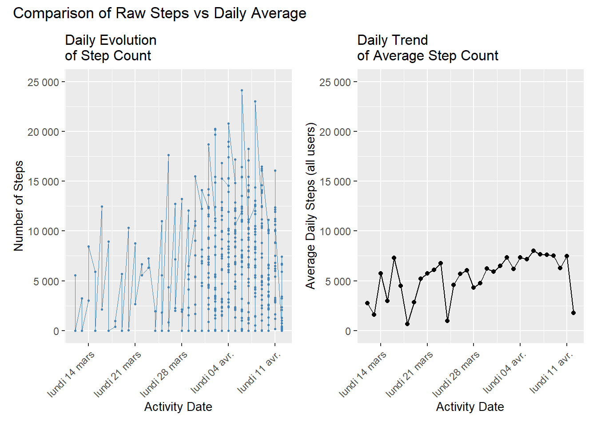
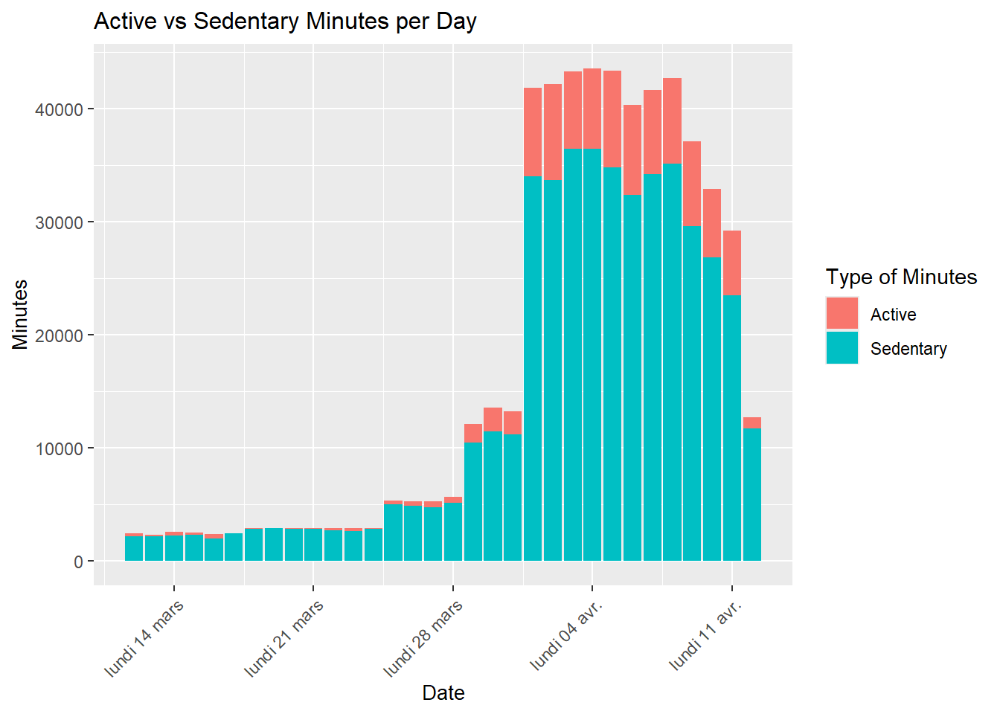
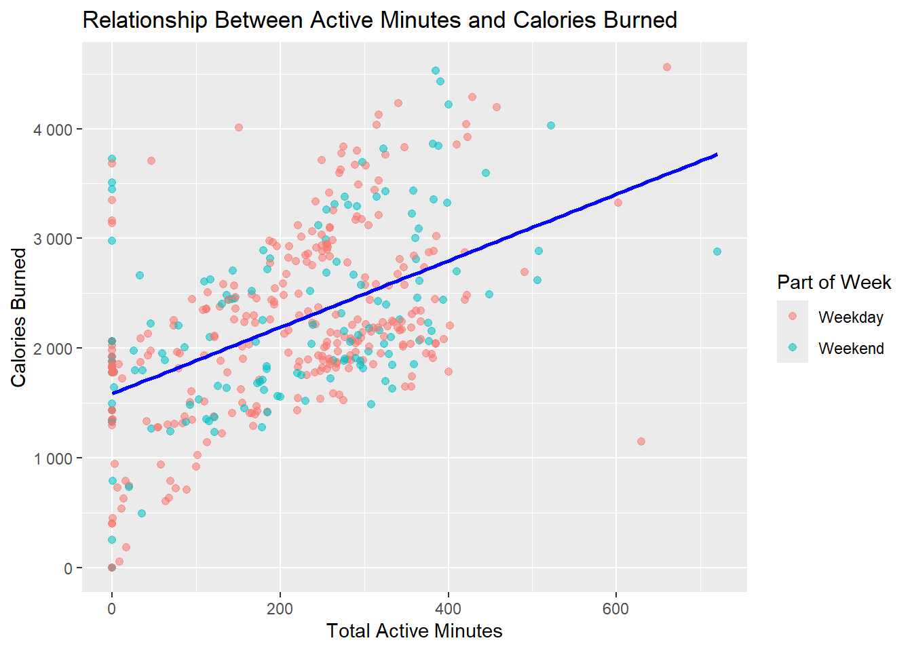

Bellabeat - Daily Activity Analysis
1 Line Charts: Steps per Day

Daily Evolution of Step Count
The evolution of steps highlights strong individual variability: on a given day, step counts range from just a few thousand to over 20,000, creating significant dispersion and isolated peaks. These values primarily reflect differences between users rather than a shared temporal pattern.
After aggregating by date, a clear trend appears: the average step count gradually increases from early March to early April, rising from around 3,000–4,000 to 6,000–7,500 steps. Several noticeable dips occur (around March 18, March 31, and April 12), caused either by a general drop in activity or a reduced number of active users. Overall, the trend indicates a collective increase in activity over time.
2 Barplot: Active vs Sedentary Minutes

Clear Dominance of Sedentary Minutes
Sedentary minutes account for the vast majority of total daily time, indicating predominantly inactive behavior. From late March and especially early April, total minutes rise sharply, driven by an increase in the number of active users in the dataset. Active minutes also increase but remain far below sedentary minutes, even on the most active days.
3 Heatmap: Activity by Day of Week

Weekend vs Weekday Contrast
The analysis reveals a clear pattern: users walk significantly more on weekends than during weekdays. Saturday is the most active day, followed by Sunday, while Tuesday is the least active. Among weekdays, Wednesday stands out with slightly higher activity.
This distribution likely reflects increased availability during weekends, naturally boosting step counts.
4 Correlation Between Active Minutes and Calories Burned

Positive Relationship Between Activity and Calories
The scatterplot shows a clear positive relationship: more active minutes correspond to more calories burned. Both weekday and weekend observations follow nearly the same trend. Active minutes are therefore the primary driver of caloric expenditure, regardless of the day of the week.